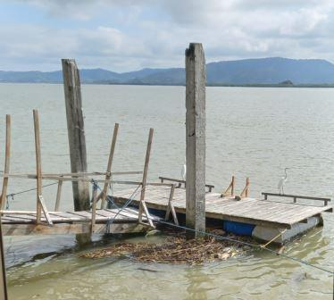

UNIVERSIDAD TÉCNICA PARTICULAR DE LOJA TECNOLOGÍAS WEB
Ecuador es un país particlarmente hermoso, en Bahía de Caraquez, provincia de Manabí hay un lugar llamado Saiananda, es un hostal precioso
perfecto para relajarse y respirar armonía y paz, se puede hacer padelboard que es algo parecido a una tabla de surf aunque más gruesa
y uno se para encima y rema para moverse, parece muy fácil pero es más complicado de lo que parece.
